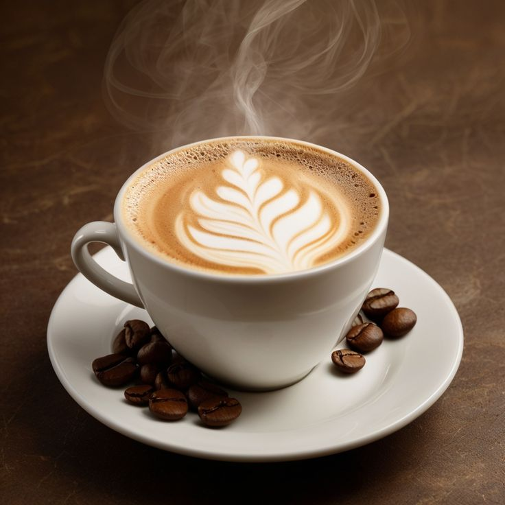

Our Story
Founded in [Year], Coffee was born out of a passion for exceptional coffee and a desire to create a welcoming space for the community. What started as a small dream has grown into a beloved local spot, where every cup is crafted with care and every customer is family.
We believe in the power of a good cup of coffee to bring people together, inspire conversations, and brighten days. Our journey has been fueled by dedication, continuous learning, and a commitment to serving only the best.
Our Mission
Our mission is simple: to provide an unparalleled coffee experience by sourcing the finest beans, perfecting our roasting techniques, and delivering each cup with artistry and precision. We are dedicated to fostering a cozy atmosphere where you can relax, work, or connect with friends over extraordinary coffee.
Sourcing & Roasting
We meticulously select our beans from ethical and sustainable farms around the world. Our direct relationships with growers ensure fair practices and the highest quality produce. Each batch of beans is roasted in-house daily, using state-of-the-art equipment and time-honored traditions. This allows us to bring out the unique flavor profiles and aromas that make our coffee truly special.
Meet Our Baristas
Jane Doe
Head Barista & Coffee Expert
With 10+ years of experience, Jane is passionate about crafting the perfect latte art and experimenting with new brew methods.
John Smith
Lead Roaster
John's dedication to the roasting process ensures every bean reaches its full potential, delivering rich and complex flavors.
Our Values
- Quality: From bean to cup, we are unwavering in our commitment to excellence.
- Community: We strive to be a welcoming hub for everyone, fostering connections and comfort.
- Sustainability: We prioritize ethical sourcing and environmentally friendly practices.
- Passion: We love coffee, and that passion is poured into every aspect of our business.